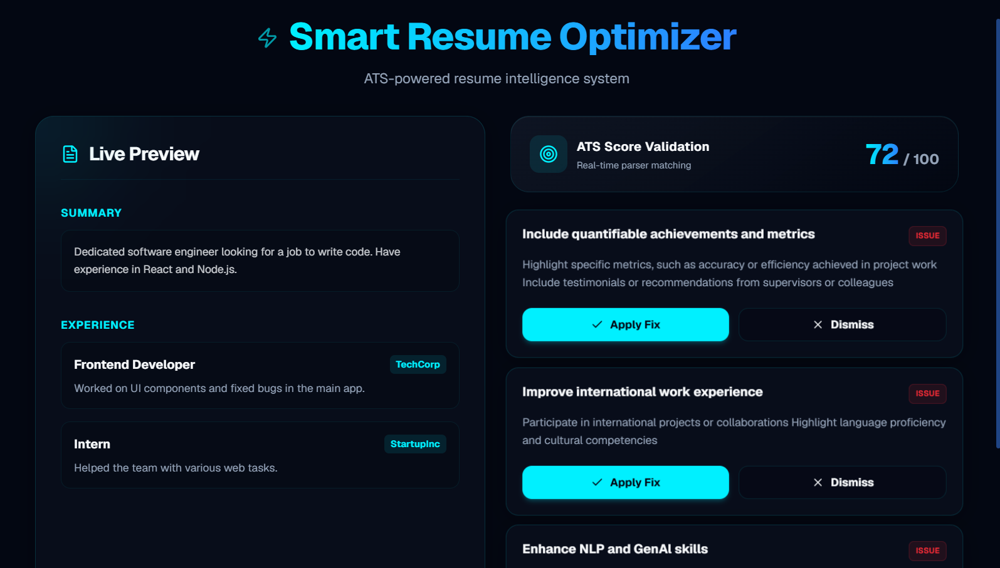
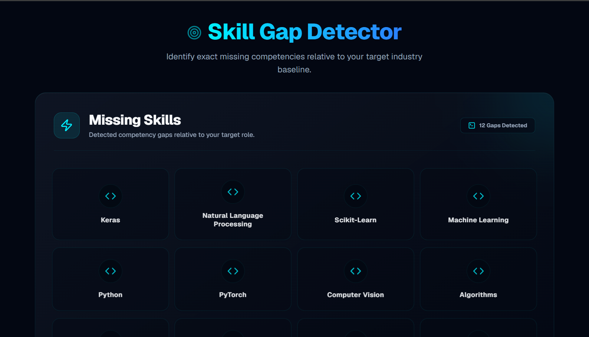

Core Contributions & System Capabilities
01
Semantic Profile Alignment: Developed an end-to-end matching platform that reviews candidate resumes, extracts multi-dimensional semantic data, and calculates precise job recommendation scores.
02
ATS Optimizer Module: Built an automated optimization system enhancing resume typography layouts, keyword depth configurations, and general compatibility thresholds against automated applicant screening logic.
04
Skill Gap Evaluation Engine: Designed analytic loops that audit specialized talent competencies against current job trends, automatically outputting structured, personalized curriculum maps and code repos.
05
Cognitive Interview Agent: Scripted conversational LLM evaluators targeting specific job specs to prompt candidates dynamically, score contextual audio/text answers, and yield actionable metrics logs.
06
Enterprise Pipeline Automation: Built ingestion handlers connecting email accounts with notification infrastructure to drive hands-free candidate discovery routines cleanly.
System Architecture Video Demonstration
Platform Visual Galleries

